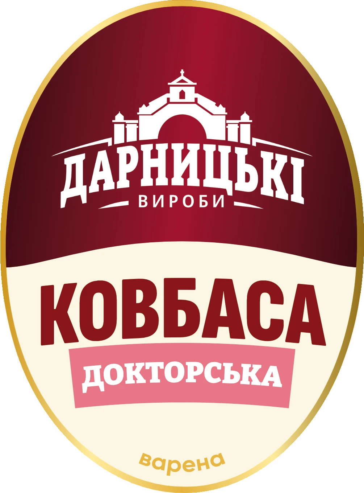
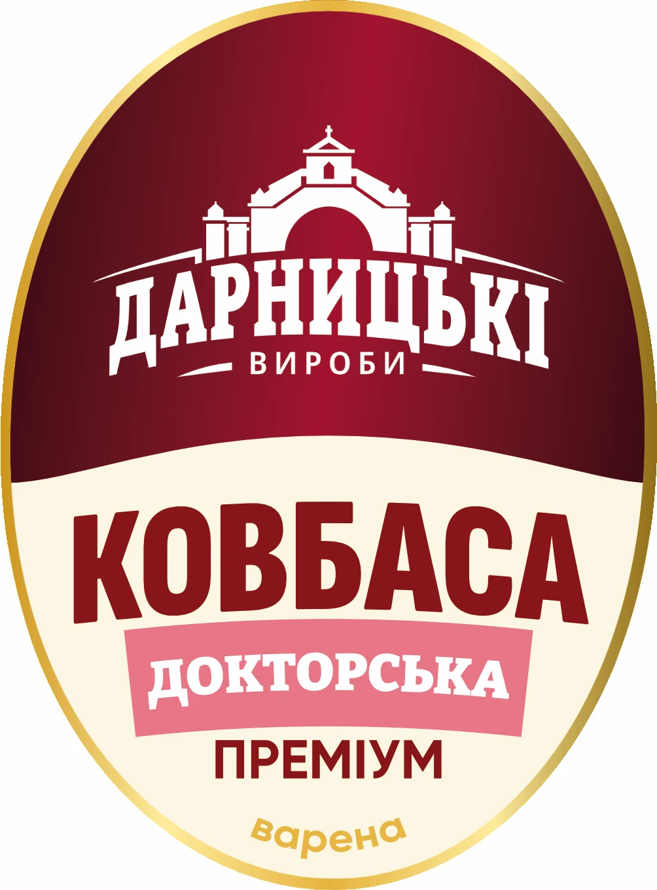
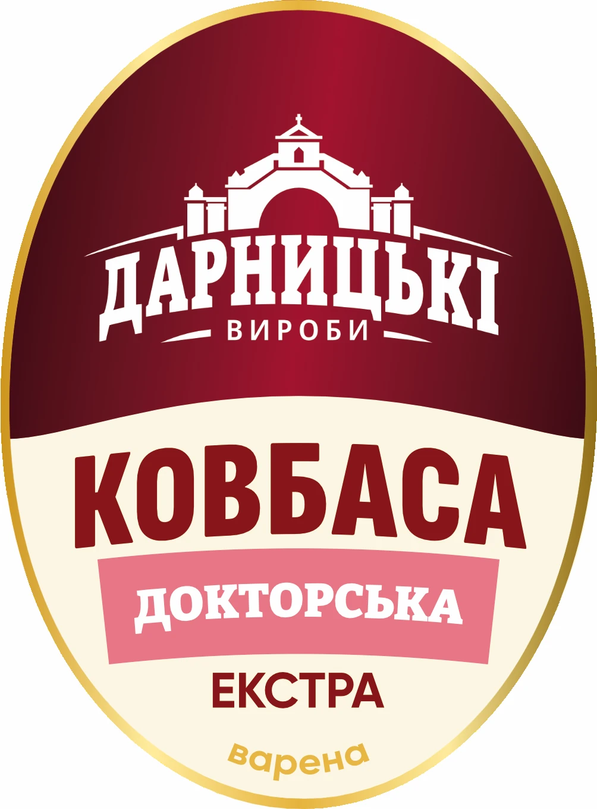

Дарницькі вироби
Смак, що об’єднує.
Ковбаси, сосиски й закуски українського смаку — до вашого столу в Польщі. Шукайте в Лодзі та Сосновці.
Каталог продуктів
Оберіть щось до столу
Оберіть продукт і подивіться, з чим його подати на сніданок чи закуску.
Зображення подачі й паковання створено за допомогою ШІ. Склад, алергени та умови зберігання перевіряйте на пакованні обраного продукту.


До столу з Дарницькими
Що сьогодні подаємо?
На українському столі завжди знайдеться скибка хліба для когось іще. Ось три ідеї, що покласти на неї або подати поруч.
Бутерброд із хрумким огірком
Змастіть житній хліб гірчицею. Додайте скибки Вершкової, солоний огірок і кілька гілочок кропу.
Сніданок просто з пательні
Приготуйте сосиски за інструкцією на пакованні. Подайте з яєчнею, зеленою цибулею та теплим тостом.
Закуска на спільній тарілці
До копчених свинячих вух подайте мариновану цибульку, огірки й хрін у невеликій мисці. Хліб поставте поруч, щоб кожен міг узяти скибку.
Як упізнати Докторську?
Шукайте білу арку над назвою бренду й рожеву стрічку з написом «Докторська». У версіях Преміум та Екстра під стрічкою є ще одне слово.



У Польщі
Де купити?
- ЛОДЗЬ93-120 Łódź, ul. Przybyszewskiego 176/178Прокласти маршрут
- СОСНОВЕЦ41-219 Sosnowiec, ul. Kosynierów 34Прокласти маршрут